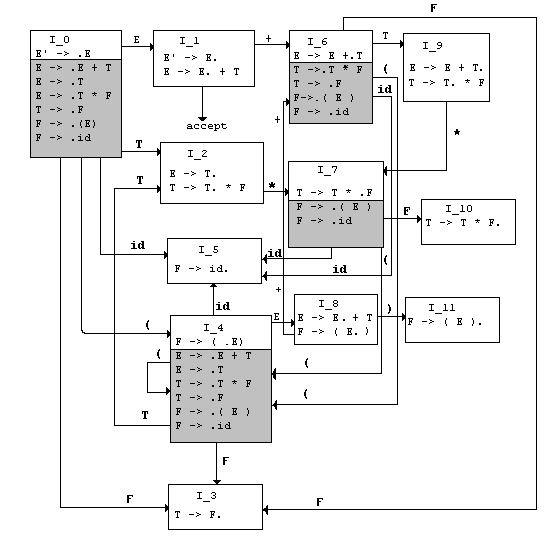

The theoretical model for lexical analysis is regular grammars and finite-state automata. The theoretical model for syntactic analysis is context-free grammars and push-down automata. The theoretical model for static semantics is context-sensitive grammars and turing machines. The most common bottom-up parsing technique in use today is LR(k) (left scan, right derivation and k symbols of lookahead). The goal of this section is to construct an automaton for an LR(0) grammar.
Def: A Viable Prefix is a prefix of some right-sentential form that ends no further right than the end of the handle of that right-sentential form. In shift-reduce parsing for an LR(0) grammar, the stack contents are always a viable prefix. A viable prefix can be reduced back to the head of the production rule (the nonterminal on the LHS).
Def: An Item in an LR(0) grammar G is a production rule of G with a dot somewhere in the body (RHS) to mark the state of the parser. The dot can be anywhere in the body. E.g., If production A is
A → BcD
there are four items in A's set of items:
{ [A→.BcD], [A→B.cD], [A→Bc.D], [A→Bcd.] }.
Item A→B.cD means that the parser is
expecting terminal c next in the input.
A → ε generates one item: A → .
Def: An Item is valid for a viable prefix if the production of that item is used to generate the handle, and the viable prefix includes all symbols to the left of the dot, but not those below.
Def: LR parsers first construct the sets of valid items (LR states) for all possible viable prefixes, associating each prefix with a state. Reduce if there is a valid item with the dot at the right end of the body, shift the next symbol onto the stack if that symbol appears immediately to the right of the dot in some valid item, otherwise error.
Def: The augmented grammar G' for grammar G is G with G' as a new start symbol.
Def: CLOSURE(I), where I is a set of items for grammar G, is the set of items constructed from I by
Rule 1. Initially, add every item in I to CLOSURE (I).Example using Grammar G above. Augment the grammar G to G'.
Rule 2. If A → α.Bβ is in CLOSURE(I) and B → γ is a production in G, add item B → .γ to CLOSURE(I). Apply Rule 2 to any new items until there are no more new items to add.
Grammar G. E → E + T | T T → T * F | F F → (E) | id Augmented Grammar G' (0) E' → E (1) E → E + T (2) E → T (3) T → T * F (4) T → F (5) F → (E) (6) F → id
(0) E' → E = {[E'→.E] , [E'→E.]}
(1) E → E+T = {[E→.E+T], [E→E.+T], [E→E+.T], [E→E+T.]}
(2) E → T = {[E→.T] , [E→T.]}
(3) T → T*F = {[T→.T*F], [T→T.*F], [T→T*.F], [T→T*F.]}
(4) T → F = {[T→.F], [T→F.]}
(5) F → (E) = {[F→.(E)], [F→(.E)], [F→(E.)], [F→(E).]}
(6) F → id = {[F→.id], [F→id.]
Put E'→.E in the set by Rule 1.
CLOSURE([E'→.E]) = { [E'→.E],
The rest of of set is constructed by Rule 2. Since E immediately follows a dot, add all E-productions that begin with a dot in the RHS:
CLOSURE([E'→.E]) = { [E'→.E], [E→.E+T], [E→.T],
.T in [E→.T] means you add all T-productions that begin with a dot in the RHS:
CLOSURE([E'→.E]) = { [E'→.E], [E→.E+T], [E→.T], [T→.T*F], [T→.F],
CLOSURE([E'→.E]) = {[E'→.E], [E→.E+T], [E→.T], [T→.T*F], [T→.F], [F→.(E)], [F→.id]}
Def: The function GOTO(I,X) where I is a set of items and X is a grammar symbol (terminal or nonterminal) is defined to be the closure of the set of all items [A→αX.β] such that [A→α.Xβ] is in I. GOTO(I,X) defines the transitions from state I under input X for the LR(0) automaton.
Def: The canonical LR(0) collection C of augmented grammar G' is the CLOSURE of all item sets for the productions in G'.
Def: A Viable Prefix is a prefix of some right-sentential form that ends no further right than the end of the handle of that right-sentential form. In shift-reduce parsing for an LR(0) grammar, the stack contents are always a viable prefix. Simple LR Parsing works because LR(0) automata recognize viable prefixes.
"A central theorem of LR-parsing theory is that the set of valid items for a viable prefix γ is exactly the set of items reached from the initial state along the path labeled γ in the LR(0) automaton for the grammar. "
Example.
Show that E+T* is a viable prefix of this augmented grammar G':
GRAMMAR G' (0) E' -> E (1) E -> E + T (2) E -> T (3) T -> T * F (4) T -> F (5) F -> (E) (6) F -> id
After having processed E+T* the automaton will be in the state containing Closure({[T->T*.F]}):
[ T -> T*.F ] [ F -> .(E) ] [ F -> .id ]These three rightmost derivations show the validity of each of the items.
T -> T*.F F -> .(E) F ->.id
E' => E E'=> E E' => E
=> E + T => E + T => E + T
=> E + T * F => E + T * F => E+T*F
=> E + T * (E) => E+T*id
------------------------------------------------------
* Creating an SLR(1) Parser From an LR(0) Automaton *
------------------------------------------------------
Starting BNF Grammar G:
E -> E + T | T
T -> T * F | F
F -> (E) | id
**********
* STEP 1 * Augment Grammar G and call it G'. Label each Production Rule.
**********
0. E' -> E
1. E -> E + T
2. E -> T
3. T -> T * F
4. T -> F
5. F -> (E)
6. F -> id
********
STEP 2. Construct the collection of Items for each production in G'.
********
E' -> E = {[E'->.E] , [E'->E.]}
E -> T = {[E->.T] , [E->T.]}
E -> E+T = {[E->.E+T], [E->E.+T], [E->E+.T], [E->E+T.]}
T -> T*F = {[T->.T*F], [T->T.*F], [T->T*.F], [T->T*F.]}
T -> F = {[T->.F], [T->F.]}
F -> (E) = {[F->.(E)], [F->(.E)], [F->(E.)], [F->(E).]}
F -> id = {[F->.id], [F->id.]}
Total : 20
********
STEP 3.
********
Construct the Closure set for each of the 20 Items of G', where each set is an
accepting state and state numbers past I_0 are assigned after applying the GOTO
function. The collection of the closure sets is the Canonical LR(0) Collection
for G'. The state numbers are arbitrary -- the ones below match the diagram in
Dragon.
--------------------------------
// 1. Production E' -> E //
-------------------------------
(I_0) Closure({[E' -> .E]})
= { [E'->.E], [E->.E+T], [E->.T], [T->.T*F], [T->.F], [F->.(E)], [F->.id] }
(I_1) Closure({[E' -> E.]})
= { [E'->E.], [E->E.+T] }
-------------------------------
// 2. Production E -> T //
-------------------------------
Closure( {[E->.T]}) = { [E->.T], [T->.T*F] ... } # defined in I_0
(I_2) Closure( [E->T.]}
= {[E->T.], [T->T.*F] }
--------------------------------
// 3. Production E -> E+T //
------------------------------
Closure({[E->.E+T]}) = { [E->.E+T], .... } # defined in I_0
(I_8) Closure({[E->E.+T]})
= { [E->E.+T], [F->(E.)]}
(I_6) Closure({[E->E+.T]})
= { [E->E+.T], [T->.T*F], [T->.F], [F->.(E)], [F->.id] }
(I_9) Closure({[E->E+T.]})
= { [E->E+T.], [T->T.*F] }
--------------------------------
// 4. Production T -> T*F //
--------------------------------
Closure({[T->.T*F]}) = { [T->.T*F], [T->.F] } # defined in I_0
Closure({[T->T.*F]}) = { [T->T.*F], ... } # defined in I_0
(I_7) Closure({[T->T*.F]})
= { [T->T*.F], [F->.(E)], [F->.id] }
(I_10) Closure({[T->T*F.]})
= { [T->T*F.] }
--------------------------------
// 5. Production T -> F //
-------------------------------
Closure( {[T->.F]}) = { [T->.F] } # defined in I_0
(I_3) Closure( [T->F.]} )
= { [T->F.] }
---------------------------------
// 6. Production F -> (E) //
---------------------------------
Closure( {[F->.(E)]}) = { [F->.(E)] } # defined in I_0
(I_4) Closure( {[F->(.E)]})
= { [F->(.E)], [E->.E+T],[E->.T],[T->.F],[T->.T*F],[F->.(E)],[F->.id] }
Closure( {[F->(E.)]}) = {[F->(E.)], .. ) # defined in I_8
(I_11) Closure( {[F->(E).]})
= { [F->(E).] }
------------------------------
// 7. Production F -> id //
------------------------------
Closure( {[F->.id]}) = {[F->.id]} // defined in I_4
(I_5) Closure( {[F->id.]})
= { [F->(id.)] }
********
STEP 4.
********
Define state transitions for the LR(0) Automaton by the GOTO function, where
GOTO(I,X) specifies the transition from State I for symbol X (X is a terminal
or nonterminal symbol).
Ex. For I_9 = { [E->E+T.], [T->T.*F] }
GOTO(I_9,*) transitions to I_7: { [T->T*.F], [F->.(E)], [F->.id] }
This reflects a shift on input '*'.
Ex. For I_7 = { [T->T*.F], [F->.(E)], [F->.id] }
GOTO(I_7,F) transitions to I_10: { [T->T*F.] }
This reflects a reduce to F.
The parser reduces if no shift transition matches input.
The GOTO functions for each Item set of the Automaton are shown below
where a blank marks an (I,X) pair where no transition exists.
E F T ( ) + * id $
--- --- --- --- --- --- --- --- ---
I_0 I_1 I_3 I_2 I_4 I_5
I_1 I_6 Accept
I_2 I_7
I_3
I_4 I_8 I_3 I_2 I_4 I_5
I_5
I_6 I_3 I_9 I_4 I_5
I_7 I_10 I_4 I_5
I_8 I_11 I_6
I_9 I_7
I_10
I_11
A graphical depiction of the LR(0) Automaton defined by Closure and GOTO
functions is shown below.
Kernel items are the Production Rule itself and all items with dots NOT on
the left end. Non-kernel items are shaded.
LR(0) Automaton for Expression Grammar G':

Automaton in Action as a Shift-Reduce Parser. Input: id*id+id
STATE SYMBOLS INPUT ACTION
---------- -------- -------- ---------------------------------
1) 0 id*id+id$ shift 5 (push 5)
2) 0 5 id *id+id$ reduce by F->id (pop 5 push 3)
3) 0 3 F *id+id$ reduce by T->F (pop 3 push 2)
4) 0 2 T *id+id$ shift 7 (push 7)
5) 0 2 7 T* id+id$ shift 5 (push 5)
6) 0 2 7 5 T*id +id$ reduce by F->id (pop 5 push 10)
7) 0 2 7 10 T*F +id$ reduce by T->T*F (pop 10, pop 7)
8) 0 2 T +id$ reduce by E->T (pop 2 push 1)
9) 0 1 E +id$ shift 6 (push 6)
10) 0 1 6 E+ id$ shift 5 (push 5)
11) 0 1 6 5 E+id $ reduce by F->id (pop 5 push 3)
12) 0 1 6 3 E+F $ reduce by T->F (pop 3 push 9)
13) 0 1 6 9 E+T $ reduce by E->E+T (pop 9 pop 6)
14) 0 1 E $ accept
In shift-reduce parsing one stack holds states 0 - 11 and one stack holds
symbols. A shift operation on input '+' pushes '+' onto the symbol stack and
the corresponding state onto the stack stack; a reduce operation
pops the stack, finds the symbols that corresponds to a reduction of that
symbol and pushes the new symbol onto the stack.
Detailed Explanation of line #5 - line #7:
Line#5. On input 'id' from state 7 shift state 5 onto stack.
Line#6. From state 5 lookahead is '+' so reduce by production rule 6 which is F->id. State 5 is popped off stack exposing state 7. From state 7 on F (F is where to goto in F->id) you push state 10.
Line#7. From state 10 lookahead is '+' so reduce by production rule 3, which is T -> T*F. State 10 is popped off the stack exposing state 7. From state 7 on T there is no transition so pop 7.
The behavior of the LR(0) automaton corresponds to the action of an LR parse:
Input: id*id+id
Leftmost Top Down: Rightmost Top down (handles marked by __ ):
_ Stack with reductions
E'->E E'->E 0 1
___
->E+T 8) ->E+T 0 1 6 9
_
->T+T 7) ->E+F 0 1 6 3
__
->T*F+T 6) ->E+id 0 1 6 5
_
->F*F+T 5) ->T+id 0 2
___
->id*F+T 4) ->T*F+id 0 2 7 10
__
->id*id+T 3) ->T*id+id 0 2 7 5
_
->id*id+F 2) ->F*id+id 0 2
__
->id*id+id 1) ->id*id+id 0 3
EIGHT Reductions of the rightmost derivation in reverse denoted by handles:
id->F F->T id->F T*F->T T->E id->F F->T E+T->E Accept!
********
STEP 5.
********
The only thing left to do to implement the SLR(1) parser is to construct the
parsing table, which is the data structure used during parsing.
--------------------------------------------------------------
Constructing an SLR(1) Parsing Table from the LR(0) Automaton
--------------------------------------------------------------
Stack States S_0 ... S_n correspond to Item Collection I_0 ... I_n.
Actions: 's2' means consume input and shift state 2 onto the stack; 'r3' means
reduce stack by Production Rule 3
Apply the rules below to make shift, reduce and GOTO decisions.
Rule 1. To make shift decisions, look for Items with a dot followed by a
terminal; i.e., foreach GOTO[I_i,a] = I_j, denote ACTION[i,a] as sj.
Rule 2. To make reduce decisions, look for Items ending in dot; i.e., if
[A->alpha.] isin I_i then set ACTION[i,a] to "reduce A->alpha" for all
terminals a in FOLLOW(A).
Rule 3. If [S` -> S.] isin I_i, then set ACTION[i,$] to accept.
Rule 4. If GOTO(I_i, A) = I_j, then GOTO[i,A] = j, for nonterminal A. This rule
extends the GOTO function to map State x Nonterminals -> State; e.g.
GOTO[1,N]->2 means from state 1 and nonterminal N, move to state 2. The
GOTO action is used after a reduction to determine what state to push
onto the stack; e.g., pop the current state and push the state number
defined by GOTO.
Rule 5. Anything not filled in by this point is an error state
---------------
Supporting work.
---------------
Label each production in the grammar (E'->E is not reduced so no need to label):
(1) E -> E + T (4) T -> F
(2) E -> T (5) F -> (E)
(3) T -> T * F (6) F -> id
Compute FOLLOW(A) for each nonterminal in G. FOLLOW(A) contains all terminals
that immediately follow nonterminal A in the RHS of a production.
FOLLOW(E) = {$,+,)} FOLLOW(T)={$,+,*,)} FOLLOW(F)={$,+,*,)}
4 states have items ending in dot - you will reduce in these states:
I_1: E'->E. $ is accept - nothing else matches.
I_2: E->T. reduce by Rule 2 for all terminals in FOLLOW(E)
I_3: T->F. reduce by Rule 4 for all terminals in FOLLOW(T)
I_10: F->T*F. reduce by Rule 3 for all terminals in FOLLOW(F)
I_11: F->(E). reduce by Rule 5 for all terminals in FOLLOW(F)
The shift actions are easy. For example, from I_2 on input * you shift state
7 onto the stack since you move from E->T.*F to T->T*.F and I_7 contains that
item.
The GOTO transactions correspond to which state you end up in after you do a
reduce. For example, assume you reduce by rule F -> id and thus pop a state
symbol off the stack. If state 0 is then exposed on the stack you goto state 3
by pushing state 3 onto the stack. The GOTO functions are easily filled in by
following the transitions.
Parsing Table for Grammar G'.
--------,-----------------------------,-----------------
STATE | ACTION | GOTO
--------+-----------------------------+-----------------
| id + * ( ) $ | E T F
--------+-----------------------------+-----------------
0 | s5 s4 | 1 2 3
--------+-----------------------------+-----------------
1 | s6 acc |
--------+-----------------------------+-----------------
2 | r2 s7 r2 r2 |
--------+-----------------------------+-----------------
3 | r4 r4 r4 r4 |
--------+-----------------------------+-----------------
4 | s5 s4 | 8 2 3
--------+-----------------------------+-----------------
5 | r6 r6 r6 r6 |
--------+-----------------------------+-----------------
6 | s5 s4 | 9 3
--------+-----------------------------+-----------------
7 | s5 s4 | 10
--------+-----------------------------+-----------------
8 | s6 s11 |
--------+-----------------------------+-----------------
9 | r1 s7 r1 r1 |
--------+-----------------------------+-----------------
10 | r3 r3 r3 r3 |
--------+-----------------------------+-----------------
11 | r5 r5 r5 r5 |
--------+-----------------------------+-----------------
yacc parsing tables for Grammar G.